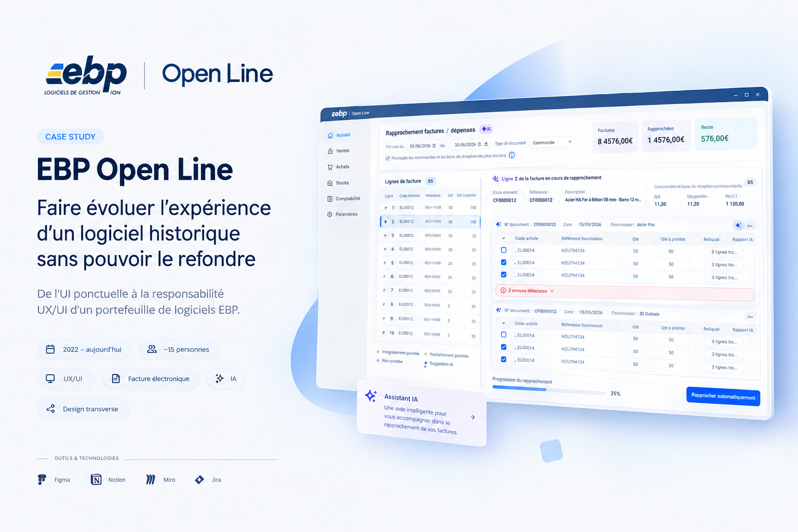
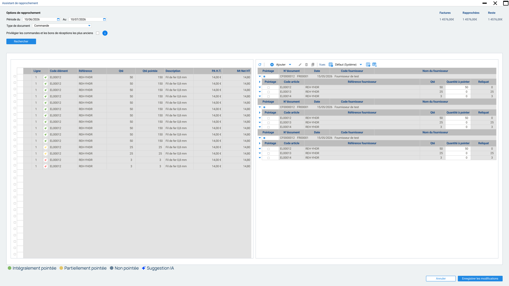
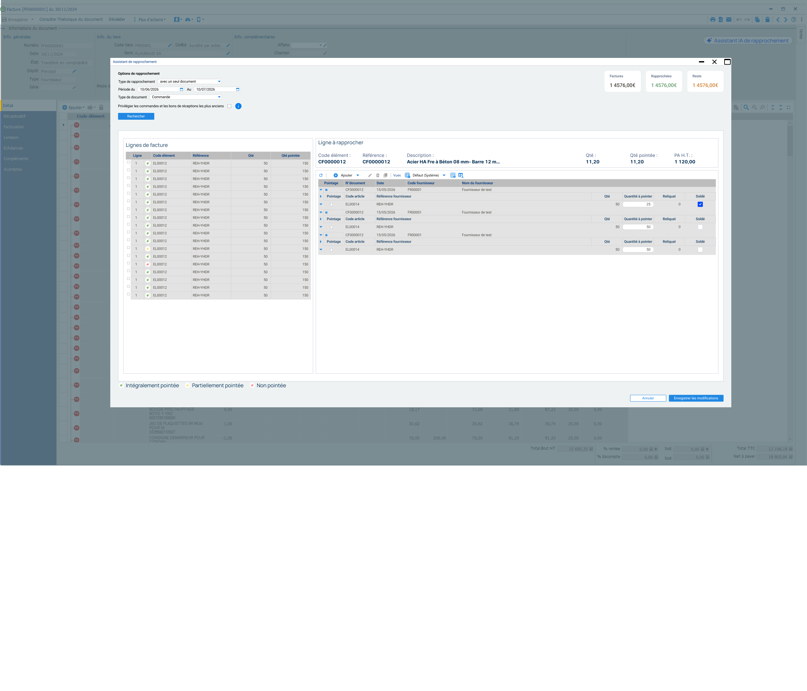
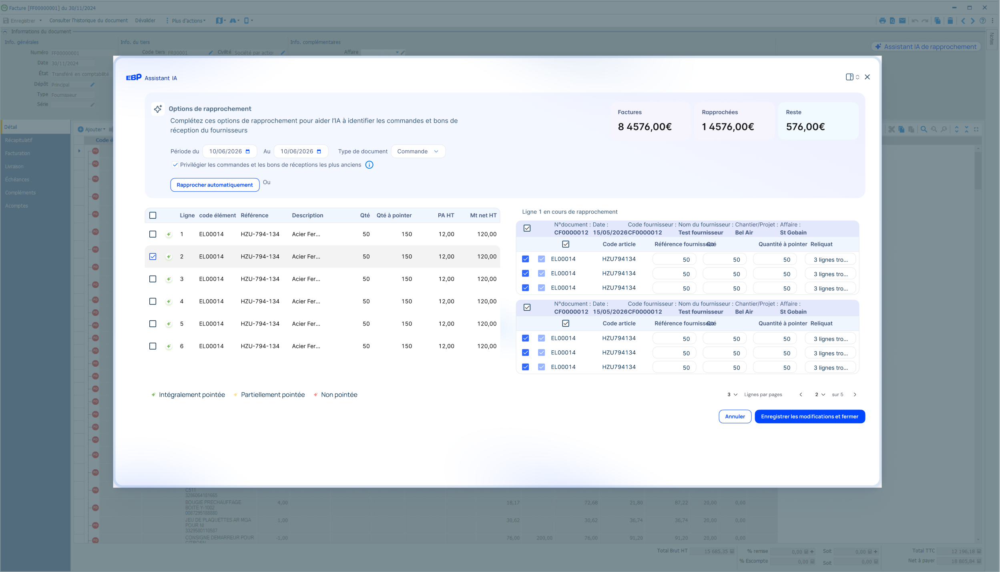
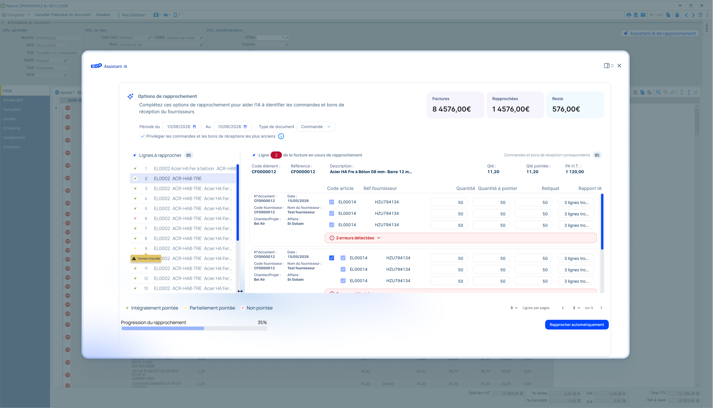

Faire évoluer l'expérience d'un logiciel historique sans pouvoir le refondre
De l'UI ponctuelle à la responsabilité UX/UI d'un portefeuille de logiciels EBP.

En 2022, j'ai été missionnée sur EBP Open Line Bâtiment, une gamme de logiciels historiques aux contraintes métier fortes (TVA, certifications, réglementations propres à chaque métier), construite sur une technologie ancienne. La consigne initiale : faire évoluer le produit sans trop modifier l'existant.
D'abord orientée UI, avec des demandes ponctuelles, mon rôle s'est élargi à la conception de fonctionnalités complexes et aux sujets transverses. Depuis septembre 2026, je suis responsable de l'UX/UI de l'ensemble des logiciels EBP Informatique (paie, bâtiment, gestion commerciale, comptabilité, mécanique), au sein d'une équipe d'environ 15 personnes.
Le logiciel devait pourtant continuer à évoluer : nouvelles fonctionnalités, réglementations, services, attentes. Les équipes de développement avaient peu de flexibilité pour introduire des composants ou des interactions éloignés de l'existant.
Comment améliorer l'expérience d'un produit historique lorsque la refonte n'est ni souhaitable ni techniquement réaliste ?
Des professionnels aux métiers différents, avec des besoins de facturation spécifiques.
Une forte profondeur fonctionnelle et de nombreuses règles réglementaires.
Un framework historique qui limite les nouveaux composants et interactions.
Des roadmaps chargées, peu de place pour reprendre l'existant.
J'ai adopté une approche progressive : améliorer ce qui peut l'être, sans investissement disproportionné par rapport au cycle de vie du produit. Plusieurs départs dans l'équipe design avaient rendu les fichiers historiques difficiles d'accès : j'ai créé un UI Kit Open Line pour concevoir des interfaces cohérentes avec l'existant. Mon travail a surtout porté sur la hiérarchisation de l'information, la simplification des interactions et la réorganisation des composants existants, plutôt que sur une transformation radicale.
J'ai insisté pour participer aux réunions entre les Product Owners et le support technique, et j'ai échangé avec des électriciens, chauffagistes, peintres, commerçants et comptables lors des recherches sur Hubbix Bâtiment et sur l'assistant IA. Un constat revenait : Open Line est riche mais complexe à prendre en main. Les utilisateurs contactent EBP pour paramétrer leur dossier, trouver comment réaliser une opération ou automatiser un calcul.
Ne pas attendre qu'un problème soit transformé en User Story pour commencer à le comprendre.
D'où une hypothèse : plutôt que d'obliger l'utilisateur à connaître la structure du logiciel, l'IA peut devenir une nouvelle porte d'entrée vers les capacités existantes du produit.
L'arrivée de la facture électronique, obligatoire à partir de septembre 2026, concernait tous les produits EBP : nouvelles normes, plateformes agréées, e-reporting, dépendances entre logiciels. J'ai aidé les Product Managers à concevoir un atelier d'alignement de deux jours réunissant environ 20 Product Owners et chefs de projet, construit autour d'un Customer Journey et d'un Service Blueprint, pour que chaque équipe identifie les impacts sur son produit.
J'ai ensuite participé, avec les Product Managers, à la conception de plusieurs parcours : onboarding vers une plateforme agréée, cycle de vie d'une facture, e-reporting, outil comptable intégré et rapprochement entre factures et dépenses. Cette expérience m'a fait passer d'une réflexion centrée sur l'écran à une réflexion sur le service, l'écosystème et les dépendances entre produits.
Le consultant métier m'a proposé une organisation basée sur les tableaux historiques : factures à gauche, commandes et bons de réception à droite. Ma première version reste fidèle à ce besoin et aux conventions du logiciel, pour valider d'abord la structure fonctionnelle.

La direction souhaitait toutefois que la fonctionnalité soit présentée comme une fonctionnalité IA, alors que ce rapprochement repose davantage sur de l'automatisation que sur de l'IA générative.

J'ai exploré deux pistes. L'une garde les codes d'Open Line en ajoutant des statuts de rapprochement, une distinction visuelle des suggestions et des indicateurs clés. L'autre reprend les codes de l'assistant IA, pour une rupture plus visible avec l'interface historique. Elle soulevait une question :
Est-ce que l'utilisation de l'IA est réellement pertinente pour ce cas d'usage ?

J'ai confronté cette piste, avec le consultant métier et le Lead Product de l'équipe IA, à la réalité technique et produit : accès du backend aux données, fiabilité du résultat, coût, place dans la roadmap. L'arbitrage a été de privilégier l'automatisation existante, plus fiable, moins coûteuse et plus adaptée, alors que la roadmap de l'équipe IA était déjà très engagée.
Le rôle du Product Designer n'est pas de mettre de l'IA partout, mais de déterminer quelle technologie et quelle interaction servent réellement le besoin utilisateur.

Une discussion avec mon manager m'a fait reconsidérer la structure. En décomposant la tâche (sélectionner une ligne de facture, identifier les commandes correspondantes, rapprocher ou vérifier, passer à la ligne suivante), les deux tableaux n'avaient pas la même importance :
J'ai gardé une vision globale des lignes de facture pour faciliter la navigation, la progression et l'identification des erreurs, et retravaillé la sémantique de l'automatisation : états de rapprochement, suggestions, erreurs, alertes. L'interface accompagne plutôt qu'elle ne remplace : l'utilisateur comprend ce qui a été fait, repère les anomalies et peut agir. La proposition est en cours d'arbitrage avant développement.
Depuis septembre 2026, je ne travaille plus sur un produit mais sur la cohérence UX/UI d'un portefeuille de logiciels aux contextes métier, niveaux de maturité (Activ, Pro, Elite, Association) et contraintes techniques différents.
Cela m'amène à penser la cohérence entre les produits, la mutualisation des patterns, l'évolution des standards UI, la dette UX, la priorisation des améliorations et l'intégration progressive de l'IA.
Certaines propositions ont été abandonnées, d'autres simplifiées. Le design est devenu un outil pour explorer les possibilités et faire émerger les arbitrages. J'ai surtout appris à concevoir avec les contraintes plutôt que contre elles : dans un logiciel historique, chaque changement se pèse avec :
la valeur utilisateur, la faisabilité, le coût, la roadmap et le cycle de vie du produit.